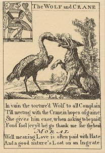
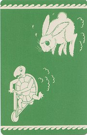
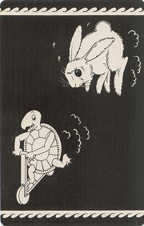
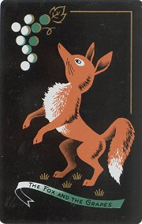
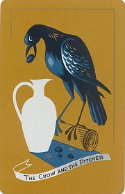
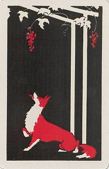
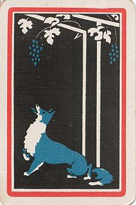

|
1797?/1980
"Superfine Harry VIII Playing Cards Made by I. Kirk, London. X
Pounds." 2½" x 3¾". Reproductions produced especially for
the Colonial Williamsburg Foundation. Two extras.
The legend on the packet, which shows a
crude image of Henry the VIII, reads "For Exportation. Fifty pounds
penalty if relanded, and twenty pounds if sold or used in Great
Britain." Thomas Kirk did the illustrations for the Croxall
edition of 1797; might he be connected with this "I." Kirk?
Each card has a title, a fable and moral in verse, a picture, and a
playing card face. That is a great deal of information to put into a
small space! The verses presume that the player knows the fable. My
favorite illustrations in this fifty-two card set are WC on the Jack of
Hearts and "The Goat in the Well" on the Eight of Hearts. Many
(all?) are signed by Kirk.
Click on a
card below to see all thirteen cards in that suit.
|

|
1940?
Two matching decks of TH playing cards. The design shows white characters
against a green and a black background, respectively. Self sorting club
playing cards. "Deck Copr. 1932." In the sturdy original 3
7/8" x 5" box. NY: Bid-Rite Playing Card Corp. $12.99 from Louie
and Annette Fotinatos, Norwalk, CA, through Ebay, March, '01.
The card that comes along with the
deck proclaims "Self-Sorting Cards—First Change in over Three
hundred years." Wow! I received these cards with the original
cellophane still around each deck. Each deck also still has its
original inspection notice. In the design the tortoise on a scooter
moves to the bottom left corner of the card, while a hare (in
mid-air?) bounds after him.
|


|
1950?
Three decks of playing cards showing FG on the backs. Against a black
background, a brown fox stands up towards some white and green grapes. A
banner in white and green proclaims the title underneath the fox. In the
sturdy original 3¾" x 7½" slipcase, stamped with "For
Samba or Bolivia" on its felt bottom. Cel-U-Tone Finish. Congress
Playing Cards. $4 from John Verderame, Morgantown, PA, through Ebay,
Sept., '00.
The set comes with a small
brochure that helps to explain why three decks come together, for the
brochure contains official rules for Canasta, "Incorporating the
Latest Changes Made for 1950." The cards are in very good
condition. See the adjoining item for a companion deck.
|

|
1950?
Two decks of playing cards showing FG and CP, respectively, on their
backs. The fox is as above in the three-deck Canasta set. For CP, against
a tan background, a black crow stands over a white pitcher. A banner in
white and blue-gray proclaims the title underneath the scene. In the
sturdy original 3¾" 5" slipcase. Cel-U-Tone Finish. Congress
Playing Cards. $6 from Harry Glogower, New York, NY, through Ebay, June,
'00.
The style and artistry of the
two cards make them a nice complement to each other. I am especially
pleased that someone had sense enough to put two fables together in
one set.
|

|
|
|
|
|
1970?
Two individual playing cards showing FG on the backs. One image is
entirely in black and red; the other is in black and blue with a red
stripe around the outside. $8 from Dany Wolfs, Roesalare, Belgium, August,
'00.
Actually the FG image in the
blue card is reduced to include the red stripe inside the white
margin, which occupies the same space as on the red card. The only
identifying mark is "Grapes" on the 4 of spades on the red
card. The blue card is the 2 of clubs. If I keep this up, will I be
able to put together a whole deck of individual cards with different
fable images?
|

|
|
 |
|
|
|